|
EcoliSimulator
2.0.1a
|
|
EcoliSimulator
2.0.1a
|
The program EcoliSimulator is a command-line based simulator of different models for Ecoli, which produce graphical, numerical and Statistical analysis of the result obtained.
The program is completely written in c++: and use gnuplot and/or Matlab as a graphical toolbox.
The different models are implemented to give the maximal freedom to the user to modify parameters and and try to analyze the output.
It is design to be usable in a step-by-step (the duration of the simulations are estimated) or a pre-set mode and produces a Latex file where all the informations about the simulations and output are collected in a systematic, an hopefully, coherent and readable version.
It is possible to use more then one thread in order to perform the simulations in parallel.
In order to run all the functionalities of the program one needs that on the computer are installed
is a portable command-line driven graphing utility for Linux, OS/2, MS Windows, OSX, VMS, and many other platforms. The source code is copyrighted but freely distributed it is important that the option of set terminal pngcairo and or set terminal gif is available: If you don't have the gif terminal, it is necessary to have the program apngasm (see below) to produce the film of the evolution of the density distribution or the single bacterium tracking.To instal the program you can use the Makefile or cmake (or "by hand") NOTE: In order to install automatically the External programs it is raccomanded to have installed
If you are using different programs to achive these tasks, you can modify the definitions in the Makefile.
open a terminal and navigate to the folder EcoliSimulator_0.0.1a, which contains src/ and /include.
-Makefile: You have many options according to what you want install. Notice that the Makefile does not check if a program is already installed.
- Install only EcoliSimulator:
type make
>:EcoliSimulator stefanobelloni$ make
to process the Makefile
it might happend that you need to type make.exe or the complete path to "make" or
mingw32-make.exe according to your needs.
NOTE: If you use the Makefile and the compiler g++ is not in the PATH variable,
redefine the variable CC accordingly, for example if the compiler you want to use is g++ and
it is inside the folder C:\Dev-cpp\Ming64\bin\g++.exe, substitute the definition of the variable CC as follows:
CC = C:\Dev-cpp\Ming64\bin\g++.exe
- Install gnuplot
type make gnuplot
>:EcoliSimulator stefanobelloni$ make gnuplot
For windows and Os X the installation of gnuplot will not be invasive, in the sense that
- in Windows gnuplot is installed inside the bin folder of EcoliSimulator
- in Os X, when you drag gnuplot in the Application folder the path to the program will be
/Applications/Gnuplot.app/Contents/Resources/bin/
NOTE: this version on gnuplot does not have the terminal .gif.
You need apngasm and tell the program to use it with the option --apngasm
- Install apngasm (binary)
type make apngasm
>:EcoliSimulator stefanobelloni$ make apngasm
- Intsall apngasm from source (you need cmake) This will create the executible in the bin folder.
>:EcoliSimulator stefanobelloni$ make apngasm_src
- To install along with EcoliSimulator also gnuplot and apngasm.
>:EcoliSimulator stefanobelloni$ make install
- To show the different options to build the program.
>:EcoliSimulator stefanobelloni$ make help
-cmake: This will only build EcoliSimulator in the bin folder.
- create a folder (i.e. build),
>:build stefanobelloni$ mkdir build
- move inside it
>:build stefanobelloni$ cin build;
- type:
>:build stefanobelloni$ cmake ..
- then type
>:build stefanobelloni$ make
- you can use the options of cmake to customize the installation path.
-compile by hand:
- create a folder (for example be it bin)
>:build stefanobelloni$ mkdir bin
- go inside it
>:build stefanobelloni$ cin bin
- type
g++ -std=c++11 -I../include -Wall -o EcoliSimulator ../src/*.cpp ../src/* /*.cpp
(instead of g++, use the compiler you prefer ...)
By default the Makefile and the cmake will create a bin folder, where the executable can be found and a build folder where the .o objects are saved.
The program can be lunch trough the terminal/DOS giving additional parameters to the program, in the following way:
-Available options:
--matlab=x ............................. set version matlab 'x'
--gnuplot=y ............................. set path to gnuplot 'y'
--file .................................. read the file 'EcoliRisposte.Ecoli' to perform the simulations
--file=pathtofile ....................... read file given by pathtofile.
(if the file is where the executable is run, type only the name)
--clear ................................. clear all possible trash data
--qclear .................................. clear all possible trash data and exit
--reset .................................. rest cleaning all files and settings
--script ................................. there's no initial page, useful if you run a script
--j=n .................................. max number of cores to use: default is half of the available cores
--nocolors ............................... it uses the default colors of the terminal.
use it, if you have some strange colors for the terminal, you might not be
able to read everything ... (not strange is white or black)
--apngasm=x .............................. x is the path to apngasm (with / or \\) if apngasm is in the current
directory type:
--apngasm=./ for Unix , just --apngasm= on Windows
if x is set to no, then the video is not create with apngasm ('.png' file),
but as a '.gif' file.
--apngams tells to create multilayer '.png' file.
NOTE: The defoult (for the first lunch) is '.gif' file.
--clclog ................................. clear the file Ecoli.LogEcoli.
The program allows 3 different mode of use:
Demo Version: can be used as a validating routine.Programmable Version: The user can program the sequence of the simulations to be performed as well as the parameters and options, for example "the creation of a LateX/pdf Document as summary of the simulations performed". The data are displayed via gnuplot. You can also read the parameters and MODE of simulation from a file. You can create yourself a file, or give the parameters to create a file.Step-by-Step Version: in this Version the user decide step by step the options and Simulations and can visualize the results at the end of every simulating step. In this Mode it is possible to use Matlab to analyze the data.Settings - 121 In this version it is possible to test if the program gnuplot, Matlab, apngasm, (LateX interpreter) are correctly installed and change the path where the program looks for these programs.It is possible to choose between three different options:
a priori knowing the model simulated.It is possible, afterwords decide which type of simulation the User want to perform. There are 2 alternatives:
For the options Simulation independent population and Simulation of a population interacting with the ligand it is possible to choose among 9 different models for the dynamic of the bacteria.
Celani Vergassola Memory Kernel CM10;Molecular level Implementation: Implementation of the signaling pathway in CSV11.Othmer et al. Model ;For every model it is possible to chose between three different forms of the run distribution, i.e. exponential, inverse-gaussian or exponential-inverse gaussian. You have the possibility to select and modify a great variety of parameters.
The program model the different Models in classes, that are hierarchically organized. The base class is E_coli, which defines the common variables and implements (as virtual when needed) the basic functions to produce the simulation of the movement of an Ecoli (see { figure EcoliClass}}.
The program is versatile and easy adaptable to include new models: it is only needed to implement the interface of E. coli concerning internal dynamic and visualization (9 functions).
The names of the derived classes have the following feature:
identification name, rNameDistribution means that the run distribution follows, in the stationary case the Distribution DistributionName. Similar for t where is meant the distribution of the tumble, for example r_IG means the run distribution in the steady state follows a Inverse gaussian distribution.The fist Model is taken from CM10, whose identification name is CV_rExp_tExp. The main feature is the Variable 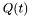 which take into account the memory of the bacterium to build the rate function of the jump process associated to the runs. The barrier for the runs is a random variable exponentially distributed{with mean equal to 1}.
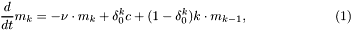
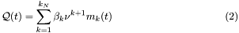
This class extend the class CV_rExp_tExp (CV_rExpIG_tExp : public CV_rExp_tExp), and the main feature is characterized by the fact that the evolution of the rate function, which depends also on , is not a deterministic process, but a Diffusion process{Solution of a SDE}, i.e.
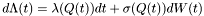
and the barrier for the runs is a RV exponentially distributed.
This class extend the class CV_rExp_tExp (CV_rIG_tExp : public CV_rExp_tExp), and the main feature is characterized by the fact that the evolution of the rate function, which depends also on , is not a deterministic process, but a Diffusion process{Solution of a SDE}, i.e.
and the barrier for the runs is a deterministic value
This model is taken from CSV11, and implement the mean field approximation for the molecular-base model of the internal dynamic of the bacterium. The generalization to the Inverse gaussian and exponential-inverse gaussian is straightforward.
The chemotactic transduction pathway is conveniently modeled by the following set of mean-field equations:
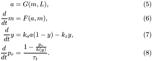
The detailed expressions for the functions that appear above are
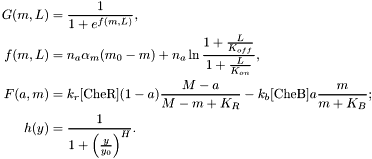
This model is taken from OthmerErban: the function for the internal dynamics are those reported in OthmerCartoon} in { Chapter Semplificato}}. The generalization to the Inverse gaussian and exponential-inverse gaussian is performed straightforward.
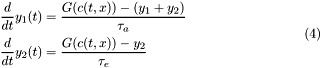
In case the program mode selected is population interacting with the ligand the Ligand concentration follows the following equation:
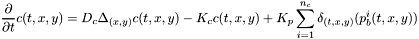
where 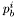 is the position of the bacterium number 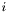.
The simulation is performed using an ADI method where the boundary conditions are of Neumann's type. The method is as follows: Let 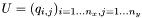 be the matrix of the mesh for the rectangular domain and 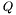 the matrix of the source. Let 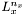 be the Laplacian-matrix is the 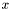 direction, it is a 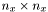 matrix (similar for 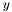), then using the Thompson's Algorithm for the resulting tridiagonal system we solve the PDE in two steps:
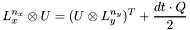
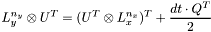
where with we indicate the matrix product, and with 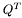 the transpose of .
Since the data recorded from every simulation can reach an enormous number{For Example, simulating a single bacterium (Celani Vergassona inverse Gaussian distribution Approach) for 1000 sec. with time step of 0.01 sec. produces the following average of data:
the data are saved in .dat files, whose name are univocal determined for every run of the program and are made up of 3 different parts, Prefix-MittlePart-Suffix, i.e.
sim%03d-, where in %03d is stored the number of the simulation in the current subsectiontype_name, according to which kind of data it contains, for example Ecoli_info, run_t, theta etc.%d-%d made of two numbers, the first one the Type of Simulation, the second the Type of Model.The same structure is use for the name of the files of the images and video produces via gnuplot
At the end of every simulation the following files are created in a folder (default in the folder where the executible is run, but you can change it in the setting menu), whose name is as follows:
and for DEMO version:
Single bacterium based simulation:
Large population based simulation:
All the data and the scripts (to save and to visualize) used to generate the pictures are saved in a subfolder odf the folder of the summary colled DATA.
In this section we present the basic analysis (that is as well a Statisical analysis) that the program provide.
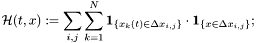
We do not use more sophisticated estimation since we perform no comparison with continuous model. In case such a comparison should be performed, we should employ the kernel density estimation technique with more appropriate kernel functions.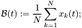
its speed in direction 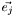, i.e.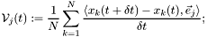
as well as the calculation of the mean square displacement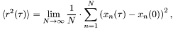
and the simple linear regression. In the present case it is appropriate to force the regression line to pass through the origin, i.e 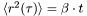.The program performs the identification of the parameters of the model starting from the data. The program allows to analyze data with the following format:
The data recoded are:
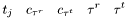
where 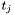 is the time of the beginning of the -th run, 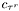 is the concentration recorded at time of the end of the run , 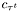 the beginning end of the tumble and 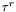 are (resp. 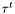) the duration of the run (resp. tumble) -th.
Once the program identifies which kind of data are to be analyzed, it proceed trying to find which is the best model fitting the data.
If you want to add new model you have to modified also the following function
It is recommended that you implement the following virtual function when subclassing E_coli:
Functions that are likely to be reimplemented
Functions that are already implemented somewhere for most of the porposes
Function that till now have been used only in the base form
 1.8.11
1.8.11